Introduction and Crawlers¶
What is the web?¶
Simple definition:
Hyper-linked network of web pages
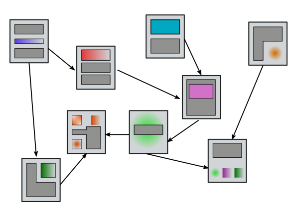
Number of web-pages indexed by Google estimated by https://www.worldwidewebsize.com/
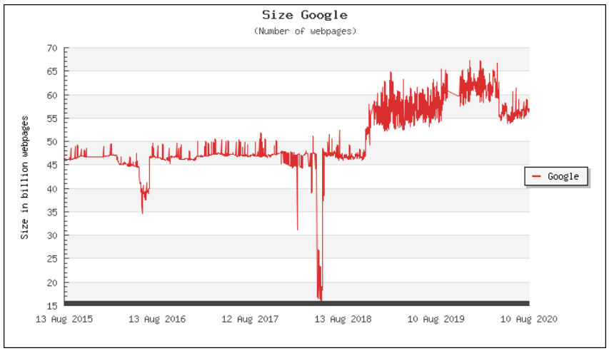
A page may contain multi-media content
We focus on text in this course (we view web pages as documents of texts)
- Carries the most important information (in most cases)
- Techniques used for dealing with text can be adapted to dealing with other types of data (cf. “visual words” in computer vision).
What is web intelligence?¶
Intelligent ways to extract information and knowledge from the web:
- I finding relevant information available on the web
- obtaining new knowledge by analyzing web data: the web itself, but also how it evolves, and how users interact on and with the web
Some applications:
- Intelligent Search
- Recommender Systems
- Business Analytics
- Crowd Sourcing
- Not so nice ones:
- Advertising
- Manipulation
- Surveillance
Web Crawlers¶
Before we can do anything, web data needs to be retrieved and organized:
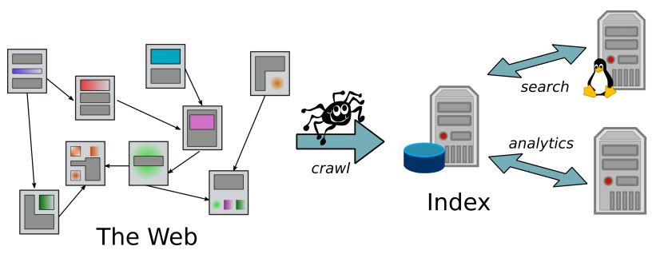
1 2 3 4 5 6 7 8 | |
Key design issue
- the frontier of URLs to be processed
- selection strategy implementing
get_url
Two simplistic solutions¶
- frontier as stack
- leads to depth-first seach
- Problem
- can get quickly stuck in "dead end" remote corners of the web
- frontier as queue
- leads to breadth-first seach
- Problem
- slow progress, lacking politeness
Both are too simple because
- a pure sequential, single thread architecture will get stuck once a host does not respond (quickly) to a fetch(url) request
- crawler must implement robustness
- not get stuck in spider traps, i.e., large, dead-end (uninteresting) web components
- spider traps "... are generators of web pages that mislead crawlers into getting stuck fetching an infinite number of pages in a particular domain. Crawlers must be designed to be resilient to such traps. Not all such traps are malicious; some are the inadvertent side-effect of faulty website development." Chapter 20
- not get stuck in spider traps, i.e., large, dead-end (uninteresting) web components
- crawler must implement politeness
- not overload a single web server with requests
Crawler Types and Prioritization¶
Crawlers can have different purposes:
- Periodic
- maintain an up-to-date general picture of the web
- the same pages (URLs) should be revisited periodically
- maintain an up-to-date general picture of the web
- Focused
- map a part of the web pertaining to a particular topic
Implemented by
index(doc)- maybe not every fetched document needs to be added to the index
- frontier.add(extract_urls(doc))
- extracted URLs may be added to the frontier with different priorities
- URLs that have already been recently visited have a lower priority (periodic crawling)
- URLs that are less likely to refer to relevant pages have a lower priority (focused crawling)
- ...
- extracted URLs may be added to the frontier with different priorities
Politeness¶
- Minimum time delay between two request to one host
- Obey
robots.txtfile
robot.txt¶
Text file at top level of domain: http://domain.com/robots.txt. Provides instructions to crawlers.
Don’t allow any crawlers to go to /private/ directory:
1 2 | |
Allow all crawlers all access, except googlebot is not allowed in /tmp/:
1 2 3 4 | |
Non-standard extension of robots.txt: request delay between successive visits:
1 2 | |
The interpretation of the delay values can be crawler specific
Mercator Frontier¶
Heydon, A., & Najork, M. (1999). Mercator: A scalable, extensible web crawler. World Wide Web, 2(4), 219-229.
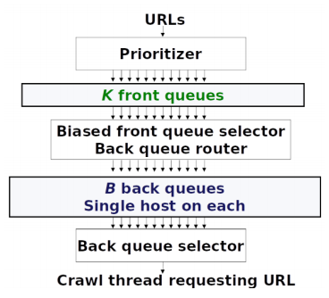
Front queues: for prioritization
Back queues: for politeness
Mercator Front Queues¶
Fixed number of K FIFO queues:
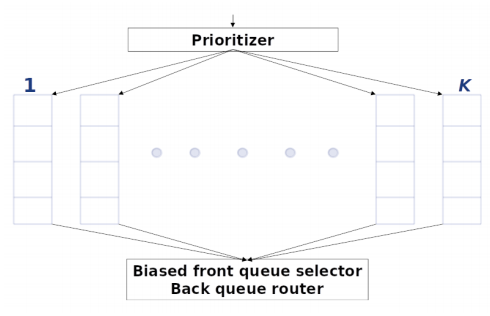
- Incoming URLs are assigned a priority value between 1 and K, and enqueued in the corresponding front queue.
- URLs are extracted by
- Selecting (e.g. randomized) one of the front queues; higher priority queues are more likely to be selected
- Dequeuing the head element from the selected queue
Mercator Back Queues¶
Fixed number of B FIFO queues:
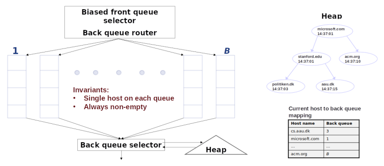
- Each back queue contains URLs from only one host
- Each queue/host has an entry in a priority queue (heap) that determines from which back queue the next URL will be extracted
- Priority value: time stamp at which next request to host can be made at the earliest (following politeness policy)
Getting the next URL:
- Determine highest priority host
- Dequeue head element from corresponding queue
- Update priority value of host
If queue of selected host becomes empty, refill back-queues from front queues as follows
- Get the next URL url from front queues
- If url's host already has a back queue: enqueue there
- otherwise
- enqueue url in the empty queue
- update heap and host dictionary
- otherwise
- Reapeat until queue non-empty
Distributed Crawling¶
In practice: use multiple crawlers
- Each crawler has its own URL frontier
- URLs are distributed over crawlers according to host: each crawler is responsible for a certain set of hosts (e.g. defined by a hash function, or geographically)
- The
frontier.add(extract_urls(doc))operation must add URLs to the frontier of the relevant crawler
Duplicate Identification¶
Many web-pages are duplicates or near-duplicates of other pages:
- Mirrors
- Identical product descriptions, user manuals, etc. contained on diverse web sites
- ...
Estimate: as many as 40% of pages have duplicates [Manning et al., 2009]
- May not want to include all duplicates in index
- The
index(doc)operation may include a prior test whetherdocis a (near-)duplicate of an already indexed page
We only consider the texts of the pages!
Fingerprints¶
If we wanted to detect identical texts, things would be relatively easy: construct a hash code
such that non-identical texts are unlikely to be mapped to the same integer (1.8\cdot 10^{19} codes vs ~10^{11} web documents).
Shingles¶
k-shingles or k-grams
We view text as a set of consecutive sequences of k words:
1 2 3 4 5 6 | |
4-shingle representation:
{ as a sequence of, a sequence of words, text as a sequence, view text as a, we view text as }
- Order of occurrence of shingles is not included in representation
- Number of occurrences of a shingle is not included in representation
- Some pre-processing of raw html text before shingling (e.g.: ignore case, remove html tags)
Assuming a fixed vocabulary of size N there are N^4 different 4-shingles, and we can identify them with the integers 0,\dots,N^4 - 1
[Broder, Andrei Z., et al. "Syntactic clustering of the web." Computer networks and ISDN systems 29.8-13 (1997): 1157-1166.]
Jaccard Coefficient¶
For any two finite sets A, B, define
J(A,B) measures the overlap relative to the total size of the sets
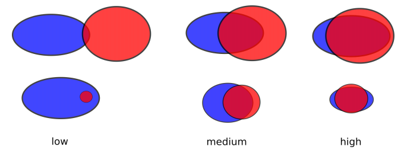
We measure the similarity of text documents d_1, d_2 by the Jaccard Coefficient of their shingle sets S(d_1), S(d_2)
Sketches¶
Estimating J(S(d_1), S(d_2)):
- Let \pi be a random permutation of the integers 0,\dots,N^4 -1
- For j=1,2: let x_j^\pi:=\min \{\pi(x):x\in S(d_j\}
- Then:
where P is the probability over the selection of a random permutation \pi
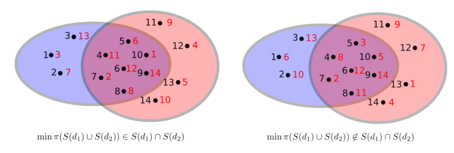
P(x_1^\pi = x_2^\pi) = probability that the minimum value \min \pi(S(d_1)\cup S(d_2)) falls inside S(d_1)\cap S(d_2)= J(S(d_1), S(d_2))
One random permutation does not tell us much, so we take many, e.g. \pi_1,\pi_2,\dots,\pi_{200}
Then characterize every document d_h by its feature vector
called the sketch of d_h:

Now we can approximately estimate the Jaccard Coefficient:
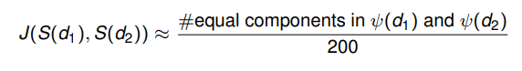
Clustering Documents¶
Given a collection of documents
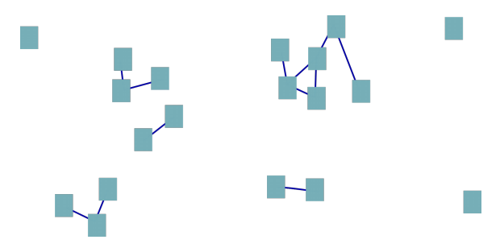
Group documents into clusters, so that near-duplicates are in one cluster
Supports:
(from google)
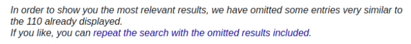
- Caution: this does not mean that all documents in a cluster are near-duplicates!
- Will give useful results only if there are no long near-duplicate paths leading from one document to a totally different one
Naïve Algorithm¶
Naïve agglomerative single-link clustering using a union-find data structure:
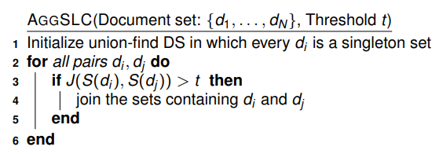
- line 3: can be approximated using sketches
- line 4: two find and (at most) one union operation
Complexity is \Theta(N^2) which is already infeasible!
Basic strategy: filter out pairs d_i,d_j for which J(S(d_i), S(d_j)) >t surely will not hold
Filtering with Sketches¶
Generate pairs of documents whose sketches have at least one component in common:
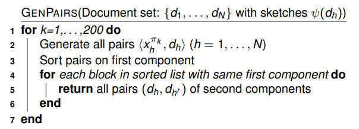
- Not counting line 5, the complexity is O(N \log N)
- Line 5 can stile generate a large number of pairs (think of rather common shingles, e.g. "this is not a")
- The same pair (d_h,d_{h'}) may be returned for different values of k
From sketches to super-shingles (shingling shingles):
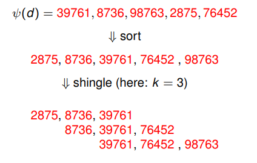
Documents with large sketch overlap are likely to have super-shingles in common
Filtering based on super-shingles:
- Generate list of \langle \textit{super-shingle, document} \rangle
- Sort on first component, return pairs of second components
This is quite heuristic!